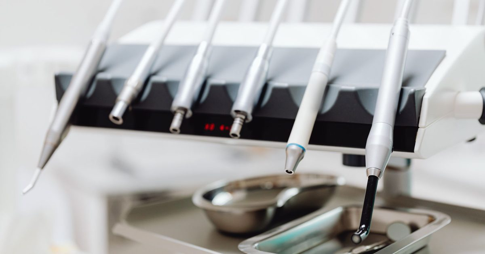

Information générale. Cet article s’appuie sur des recommandations publiées. Il ne constitue ni un diagnostic, ni une prescription, ni un conseil personnalisé : seul un examen par un chirurgien-dentiste ou un médecin permet de décider de la prise en charge qui vous convient. Ne commencez et n’arrêtez aucun traitement sur la seule foi de cet article.
L'essentiel
- Étape 1 : apprendre à maîtriser la plaque et contrôler les facteurs de risque, pour tous les patients.
- Étape 2 : traiter les surfaces des racines sous la gencive (surfaçage).
- Étape 3 : traiter les sites qui n’ont pas répondu, avec une nouvelle instrumentation ou, au besoin, une chirurgie.
- Étape 4 : soins de soutien réguliers pour éviter la récidive.
D’où viennent ces recommandations ?
Les recommandations de 2020 s’appuient sur 15 revues systématiques de la littérature scientifique, selon la méthode GRADE, puis sur un consensus d’experts et de parties prenantes. Elles décrivent une démarche progressive : l’intensité du traitement varie selon le stade de la maladie. Le plan de traitement est établi pour chaque patient par son praticien.
Le stade IV, plus avancé, fait l’objet d’une recommandation distincte de la même fédération, publiée en 2022.
- Maîtriser la plaque et les facteurs de risque
Pour tous les patients : hygiène efficace, retrait professionnel de la plaque et du tartre au-dessus de la gencive, aide à l’arrêt du tabac, contrôle du diabète.
- Traiter sous la gencive
Surfaçage : retrait de la plaque et du tartre situés sous la gencive. Réévaluation à la fin de l’étape.
- Traiter les sites qui n’ont pas répondu
Nouvelle instrumentation ou chirurgie, selon la situation de chaque site.
- Soins de soutien
Visites régulières, espacées de 3 à 12 mois selon le profil de risque, pour éviter la récidive.
Étape 1 : la plaque et les facteurs de risque
Elle concerne tous les patients. Son objectif est de motiver le patient à retirer efficacement la plaque et à contrôler ses facteurs de risque. Sont recommandés :
- une hygiène bucco-dentaire efficace, avec un engagement du patient ;
- le retrait professionnel de la plaque et du tartre au-dessus de la gencive, et la suppression des facteurs qui retiennent la plaque ;
- l’aide à l’arrêt du tabac ;
- le contrôle du diabète.
Étape 2 : le surfaçage sous la gencive
L’objectif est de réduire ou d’éliminer la plaque et le tartre situés sous la gencive, avec un éventuel retrait d’une partie du cément de la racine. Cette étape est recommandée pour réduire la profondeur des poches (l’espace qui se creuse entre la dent et la gencive), l’inflammation et le nombre de sites atteints. Elle est détaillée dans l’article « Le surfaçage radiculaire : ce que recommande la Fédération européenne de parodontologie ».
À la fin de cette étape, une réévaluation a lieu. L’objectif fixé est l’absence de poche de 5 mm ou plus avec saignement, et l’absence de poche de 6 mm ou plus. Si ces critères sont atteints, le patient passe aux soins de soutien (étape 4). Sinon, on passe à l’étape 3.
Étape 3 : les sites qui n’ont pas répondu
Lorsque des poches de plus de 4 mm avec saignement, ou des poches de 6 mm ou plus, persistent, plusieurs options existent : répéter l’instrumentation, ou réaliser une chirurgie d’accès, une chirurgie résective ou une chirurgie régénérative. Les recommandations précisent notamment que :
- la chirurgie est déconseillée lorsque l’hygiène bucco-dentaire du patient est insuffisante ;
- la chirurgie d’accès et la chirurgie résective sont seulement suggérées pour les poches de 6 mm ou plus ;
- la chirurgie doit être réalisée par des praticiens ayant une formation complémentaire spécifique, ou par des spécialistes ;
- lorsqu’une poche profonde persiste en regard d’un défaut osseux de 3 mm ou plus de profondeur, la chirurgie régénérative est recommandée ;
- une atteinte de la zone située entre les racines d’une molaire (la furcation) n’est pas, à elle seule, une indication d’extraction.
| Pratique | Position |
|---|---|
| Répéter l’instrumentation des sites qui n’ont pas répondu | Selon la situationUne des options possibles. |
| Chirurgie d’accès ou résective, pour les poches de 6 mm ou plus | Suggéré |
| Chirurgie régénérative, pour une poche profonde en regard d’un défaut osseux de 3 mm ou plus | Recommandé |
| Chirurgie lorsque l’hygiène bucco-dentaire du patient est insuffisante | Non recommandé |
| Extraction décidée sur la seule atteinte de la furcation | Non recommandéElle n’est pas, à elle seule, une indication d’extraction. |
Étape 4 : les soins de soutien
Après le traitement actif, des visites régulières permettent de prévenir la récidive et la progression de la maladie. L’adhésion du patient au programme est recommandée, avec des visites espacées de 3 à 12 mois selon le profil de risque. Cette étape fait l’objet de l’article « Après le traitement parodontal : pourquoi la maintenance compte ».
Votre rôle à chaque étape
Les recommandations européennes insistent sur l’engagement du patient : les mêmes conseils d’hygiène sont donnés à toutes les étapes, et l’adhésion au programme de soins est recommandée. La chirurgie est déconseillée lorsque l’hygiène bucco-dentaire est insuffisante : le traitement ne repose donc pas que sur le cabinet.
Concrètement, la recommandation fixe des objectifs mesurables à la réévaluation : aucune poche de 5 mm ou plus avec saignement, et aucune poche de 6 mm ou plus. Si ces critères sont atteints, le patient passe aux soins de soutien. Sinon, on passe à l’étape 3.
Les mots à connaître
- Recommandation de niveau S3
- Recommandation élaborée à partir de revues systématiques de la littérature et d’un consensus formalisé d’experts, selon la méthode GRADE.
- Poche parodontale
- Espace qui se creuse entre la dent et la gencive quand les tissus de soutien sont atteints.
- Instrumentation sous-gingivale (surfaçage)
- Retrait de la plaque et du tartre situés sous la gencive, avec éventuellement une partie du cément de la racine.
- Furcation
- Zone située entre les racines d’une molaire. Son atteinte n’est pas, à elle seule, une indication d’extraction.
- Chirurgie régénérative
- Chirurgie qui vise à reconstituer une partie des tissus de soutien perdus.
Questions à poser à votre praticien
Ces questions peuvent vous aider à préparer un rendez-vous. Les réponses dépendent de votre situation.
- À quelle étape en suis-je, et quels objectifs doit-on atteindre à la réévaluation ?
- Que dois-je faire à la maison à cette étape ?
- Si une poche persiste, quelles options existent pour ce site ?
- Quel rythme de visites de soutien me conseillez-vous après le traitement ?
Questions fréquentes
Combien d’étapes comprend le traitement d’une parodontite ?
Quatre, selon la recommandation européenne de 2020 pour les stades I à III : maîtrise de la plaque et des facteurs de risque, surfaçage sous la gencive, traitement des sites qui n’ont pas répondu, puis soins de soutien.
La chirurgie est-elle toujours nécessaire ?
Non. Elle n’intervient qu’à l’étape 3, pour les sites qui n’ont pas répondu au traitement non chirurgical. Elle est déconseillée lorsque l’hygiène du patient est insuffisante.
Pourquoi faut-il revenir régulièrement après le traitement ?
Parce que les soins de soutien font partie des mesures recommandées pour limiter le risque de récidive et de progression de la maladie. Les visites sont espacées de 3 à 12 mois selon le profil de risque.
Qu’est-ce qu’une poche qui persiste ?
C’est un site qui n’a pas atteint les objectifs de la réévaluation, par exemple une poche de plus de 4 mm avec saignement ou une poche de 6 mm ou plus. Plusieurs options existent alors : répéter l’instrumentation ou recourir à une chirurgie.
Et pour les parodontites de stade IV ?
Le stade IV, plus avancé, fait l’objet d’une recommandation distincte de la même fédération, publiée en 2022.
Une dent dont la furcation est atteinte doit-elle être arrachée ?
Pas automatiquement. Selon les recommandations, l’atteinte de la furcation n’est pas, à elle seule, une indication d’extraction.
En résumé
Contrôler la plaque et les facteurs de risque, surfacer sous la gencive, traiter les sites résistants si besoin, puis assurer des soins de soutien réguliers : tel est le chemin recommandé en Europe pour les parodontites de stades I à III.
Références
- Sanz M, Herrera D, Kebschull M, Chapple I, Jepsen S, Berglundh T, Sculean A, Tonetti MS. Treatment of stage I–III periodontitis: the EFP S3 level clinical practice guideline. J Clin Periodontol. 2020;47(Suppl 22):4-60. doi:10.1111/jcpe.13290 https://doi.org/10.1111/jcpe.13290
- Fédération européenne de parodontologie (EFP). Traitement de la parodontite de stades I à III : les quatre étapes (document de synthèse issu de la recommandation S3 de 2020). https://www.efp.org/fileadmin/uploads/efp/Photos/Continuing_Education/guidelineStagei-III4stepscombined.pdf
- Fédération européenne de parodontologie (EFP). Treatment of stage IV periodontitis: the EFP S3 level clinical practice guideline. J Clin Periodontol. 2022;49(Suppl 24). doi:10.1111/jcpe.13639 https://doi.org/10.1111/jcpe.13639
Pour une question sur votre situation personnelle, un examen est nécessaire : coordonnées et prise de rendez-vous sur la page Contact. N’envoyez pas d’informations de santé par le formulaire en ligne.